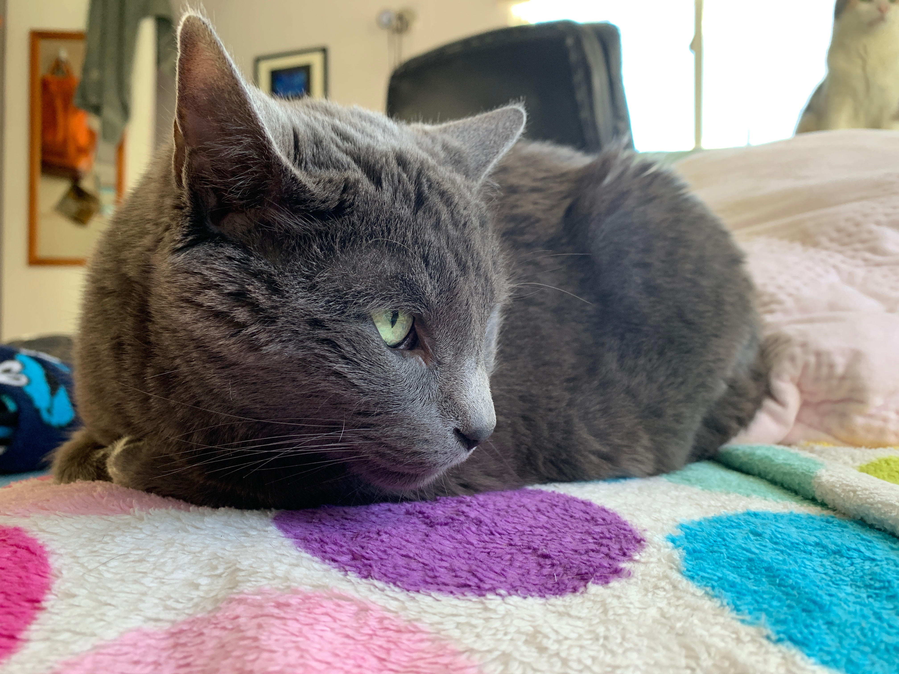

Here is the story of her nickname:
My older brother liked the name and picked it out. Simple as
that
Age:
About 18 years old, she's a grandma

Here is the story of how Matilda became a part of my family:
One day my entire family and I went to a nearby shelter to
get our first pet as a family. We sat this little russian blue cat, only about
a year old and we adopted her. Ever since then she has been a part of the
family.
Personality traits:
Loving but independent.
What does Matilda do all day?
As an old lady Matilda sleeps a lot. You can find her laying
in the sun or on my bed. She mainly stays upstairs but sometimes you will
see her adventure into downstairs.... dangerous Hunter territory.
Who is Matildas favorite family member?
Emily and Nikodem
Here is the story of her nickname:
My older brother liked the name and picked it out. Simple as that
Age:
About 18 years old, she's a grandma
Here is the story of how Matilda became a part of my family:
One day my entire family and I went to a nearby shelter to get our first pet as a family. We sat this little russian blue cat, only about a year old and we adopted her. Ever since then she has been a part of the family.
Personality traits:
Loving but independent.
What does Matilda do all day?
As an old lady Matilda sleeps a lot. You can find her laying in the sun or on my bed. She mainly stays upstairs but sometimes you will see her adventure into downstairs.... dangerous Hunter territory.
Who is Matildas favorite family member?
Emily and Nikodem